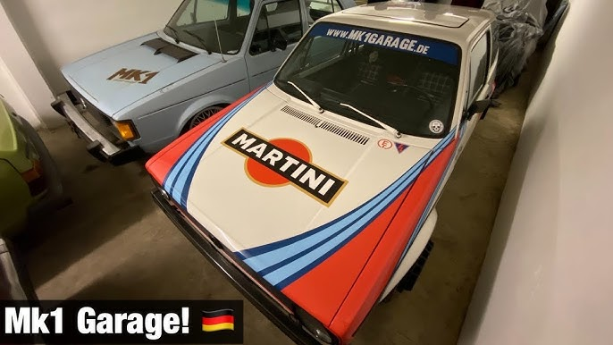
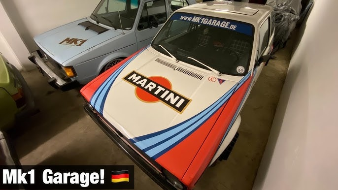

El primer Golf de producción en serie se fabricó en la planta de Volkswagen en Wolfsburg a finales de marzo de 1974. Su lanzamiento oficial al mercado tuvo lugar en mayo. Anteriormente, el Escarabajo, y por ende, el motor trasero y la tracción trasera, habían marcado la marca Volkswagen durante décadas.